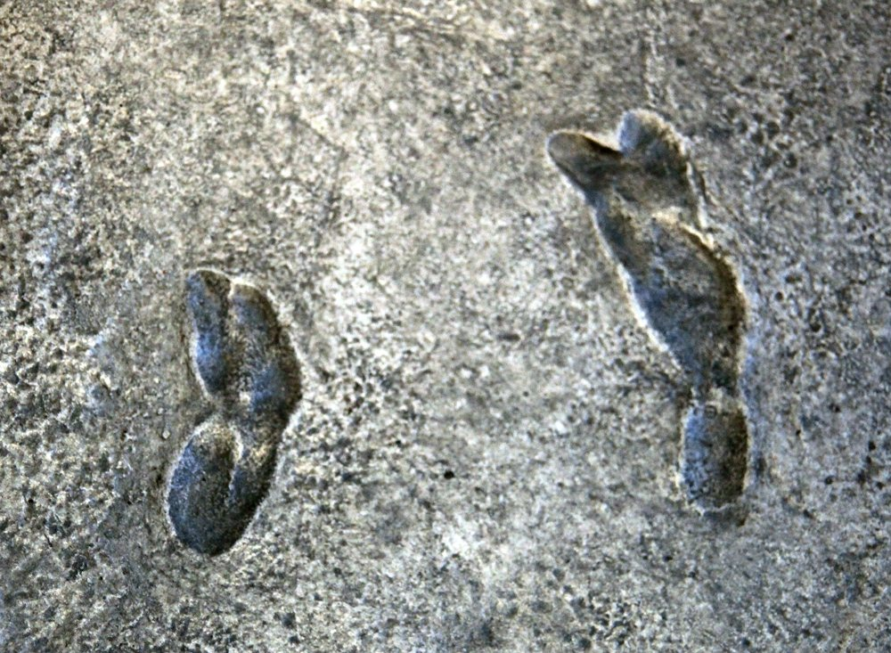

McNutt et al. · Laetoli locomotor diversity (Nature, 2021) ↗
The Nature study locates Site A and shows the trackways and footprint models.
Deep dives / Africa & Middle East
The Laetoli trackways in northern Tanzania preserve individual steps. The feet that made them are long gone, but the prints record how hominins moved across a volcanic surface during the Pliocene.
The map shows Laetoli’s trackway area, within the Ngorongoro Conservation Area.

Approximate public research locality on a modern terrain map.
At Site G, a sequence of impressions preserves a forward-facing big toe and a repeated pattern of steps on two feet. The trackway captures locomotion directly, whereas a fossil foot preserves anatomy from which gait has to be inferred. [3]
The impressions occur in layers of volcanic tuff dated to about 3.66 million years ago. The age describes the ancient crossing. Site G was excavated in 1978, and a nearby set of prints at Site S was reported decades later. [1] [4]
The Site G tracks are usually attributed to Australopithecus afarensis, which is also represented by fossils at Laetoli. Re-excavation and comparison of the Site A trail suggested a different pattern of bipedal walking. The identity of that trackmaker remains uncertain. [5] [1]
Placing Laetoli footprint trails in human-family chronology depends on bracketing stratified volcanic ash layers (40Ar/39Ar), cosmogenic nuclide burial ages, or paleomagnetic reversals above and below the artifact or footprint horizon rather than dating stone flakes in isolation. Reworking, fluvial transport, and cut-mark/percussion equifinality remain key variables evaluated in every new study. [1] [2]
Rather than identifying a single exclusive ancestor, this locality serves as a tightly constrained chronological anchor that must be compared side-by-side with contemporary Rift, southern, north African, and Eurasian finds inside the playable Human Family map. [1]
Open the source maps for their original detail, legends and dates. Their coverage and reproduction terms belong to the issuing institution.
The Nature study locates Site A and shows the trackways and footprint models.
Open this era on global Explore ↗ Open Africa & Middle East atlas ↗ Climate, sea level & ice-sheet context ↗
Sources checked and linked above; geological and historical dating methods follow the primary papers.